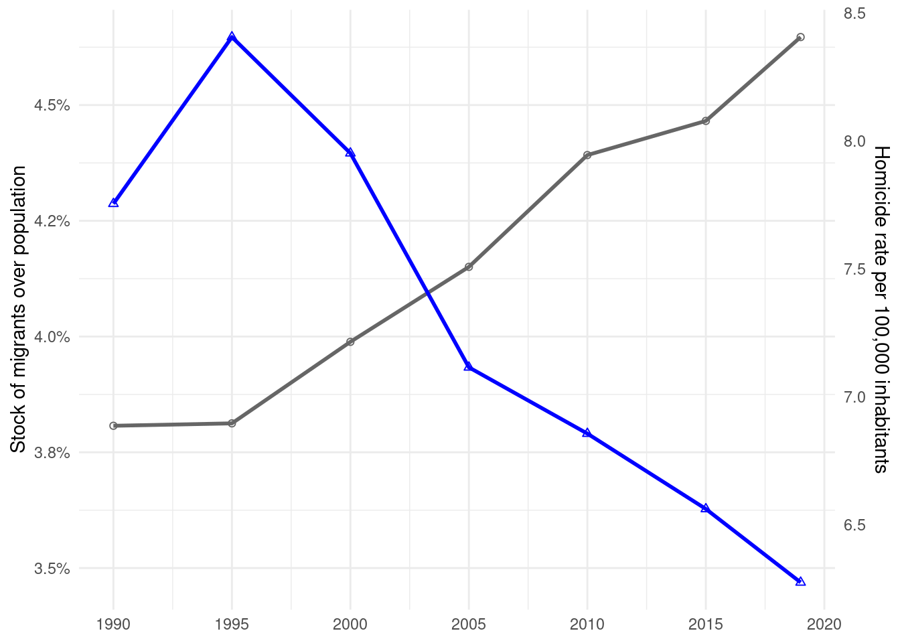

iso3c_vec <- c(
"ARM","AUS","AUT","AZE","BGR","BIH","BLR","BRA","CAN","CHE","COL","CRI",
"DEU","DNK","ECU","ESP","EST","FIN","FRA","GBR","GEO","GRC","HKG","HND",
"HRV","IND","IRL","ITA","JAM","JPN","KGZ","KOR","LKA","LTU","MAR","MDA",
"MEX","MUS","NLD","NOR","PAK","PAN","PHL","POL","PRI","PRT","ROU","RUS",
"SGP","SVK","SVN","SWE","URY","USA","VEN"
)
# 1) Filter population
wb_pop_ts <- WDI(
country = "all",
indicator = "SP.POP.TOTL",
start = 1990,
end = 2019,
extra = TRUE
) %>%
filter(region != "Aggregates") %>%
# generate iso3c
mutate(code = countrycode(iso2c, "iso2c", "iso3c")) %>%
# Keep the select countries
filter(code %in% iso3c_vec) %>%
select(code, year, pop_total = SP.POP.TOTL)Warning: There was 1 warning in `mutate()`.
ℹ In argument: `code = countrycode(iso2c, "iso2c", "iso3c")`.
Caused by warning:
! Some values were not matched unambiguously: JG, XK# 2) Combine and calculate weighted indicators
ts_df <- df %>%
left_join(wb_pop_ts, by = c("code","year")) %>%
group_by(year) %>%
summarise(
migr_w = sum(migr_pop * pop_total, na.rm = TRUE) / sum(pop_total, na.rm = TRUE),
hom_w = sum(homicide_rate * pop_total, na.rm = TRUE) / sum(pop_total, na.rm = TRUE)
)
# 3) Calculate proportions and draw
sf <- max(ts_df$hom_w) / max(ts_df$migr_w)
ggplot(ts_df, aes(x = year)) +
geom_line(aes(y = migr_w), color="grey40", linewidth=1) +
geom_point(aes(y = migr_w), color="grey40", shape=21) +
geom_line(aes(y = hom_w / sf), color="blue", linewidth=1) +
geom_point(aes(y = hom_w / sf), color="blue", shape=24) +
scale_x_continuous(breaks = seq(1990, 2020, 5)) +
scale_y_continuous(
name = "Stock of migrants over population",
labels = percent_format(accuracy = 0.1),
sec.axis = sec_axis(~ . * sf, name = "Homicide rate per 100,000 inhabitants")
) +
theme_minimal() +
theme(axis.title.x = element_blank())